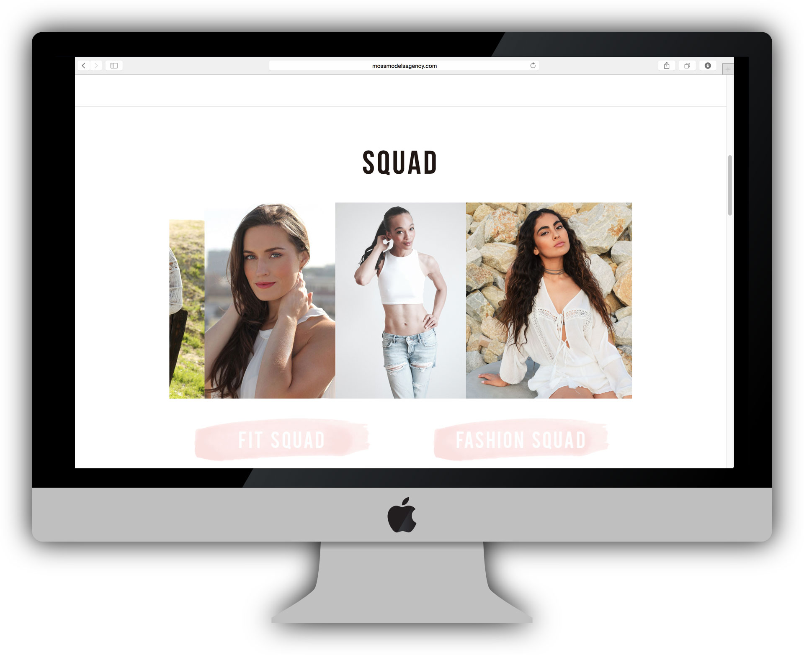
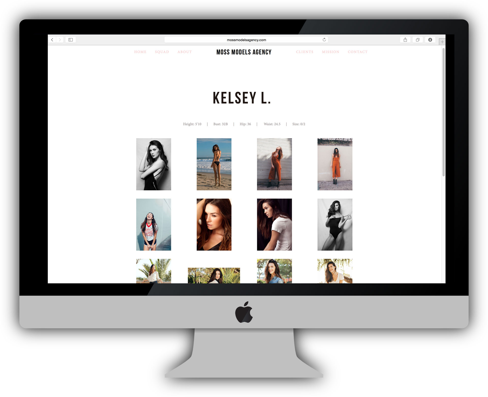
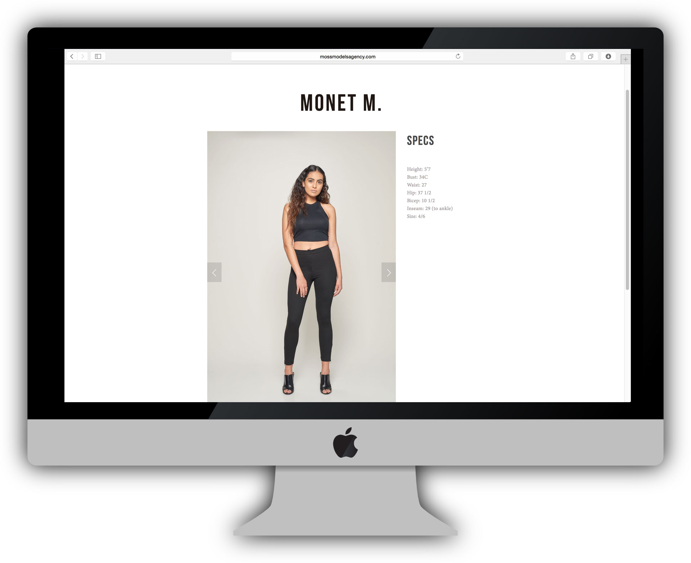
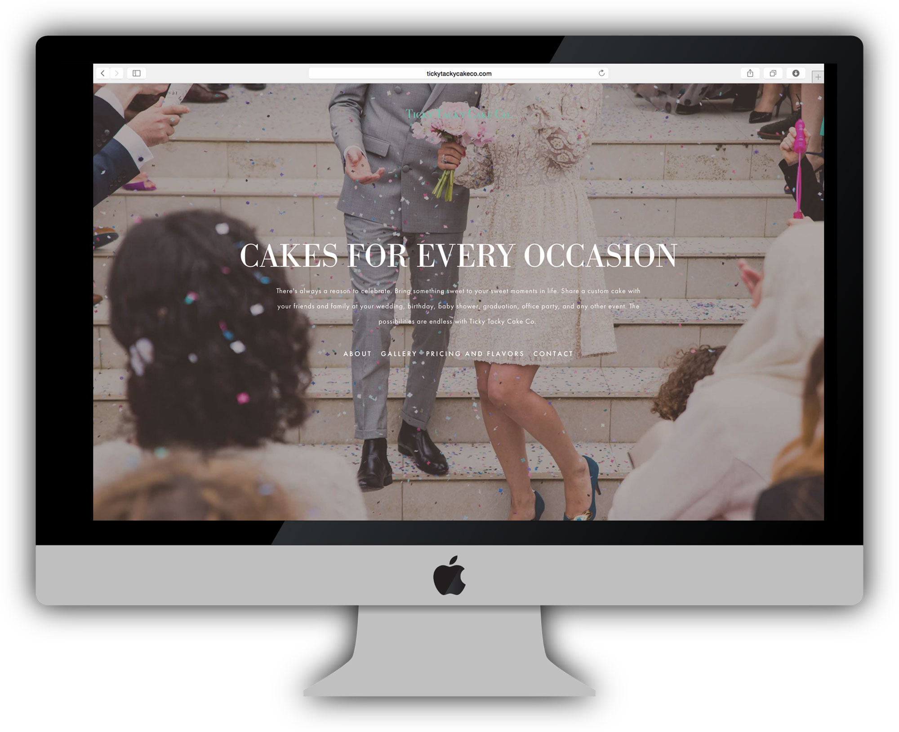
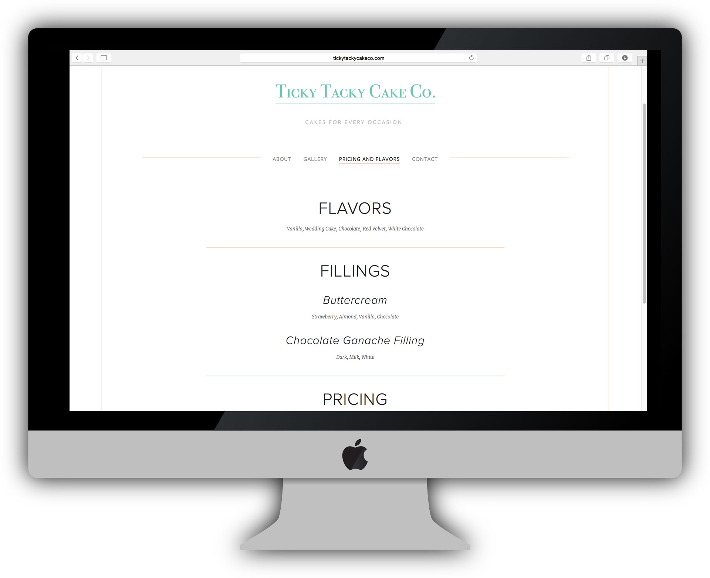
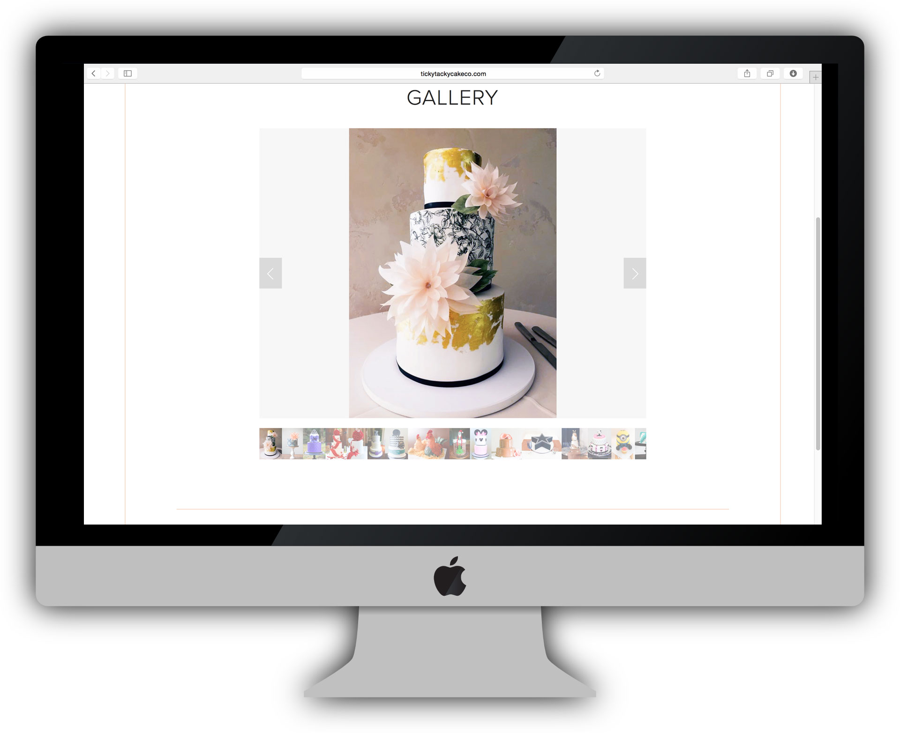
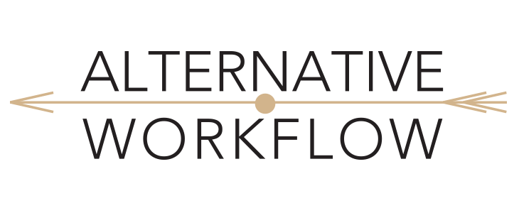
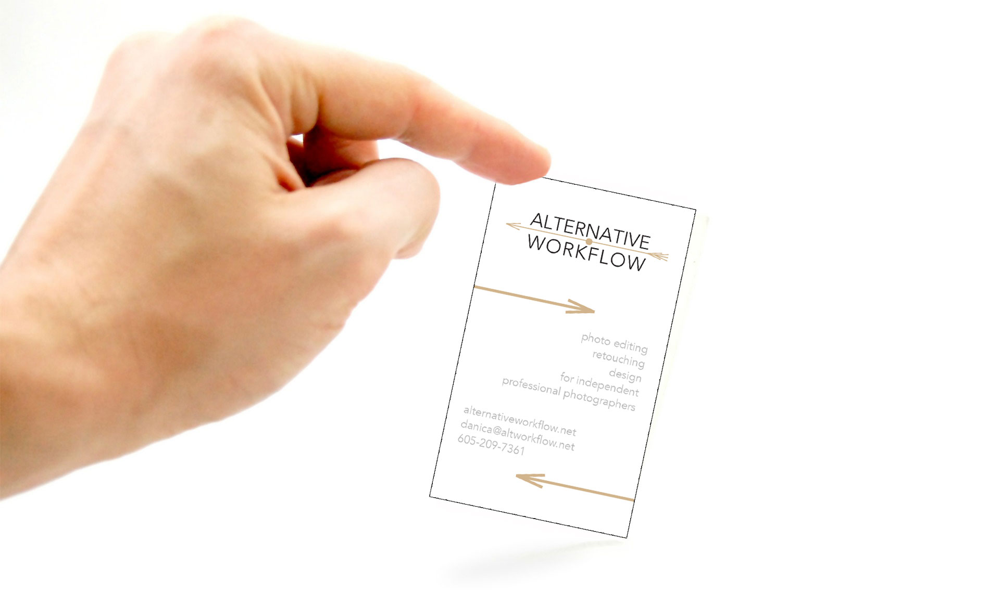

Based in Los Angeles, my creative drive is fueled by coffee, long drives, hikes, wave watching, knitting, all while having my camera and laptop in hand. I'm ready to create anywhere.
I create brands for boutique businesses and young entreprerners. I'm here to help your business cultivate it's voice, look professional from print to web to it's social media precessence. It is essential to visually look coheisive across the board for your audience. My design skills can make your dreams come to life creating all materials from business cards, note books, invitations, planners, web site, social media key art, and more.
I am an expert photo editor and retoucher having a refined artistic eye. If you are a photographer or any one looking for photo editing or retouching to help promote your business I can do the following to your images: color correction, removing unwanted blemishes, smoothing the skin, highlight the eyes, lips, whitening the teeth, remove shine from skin retouching the hair, removing flyaway hairs, contouring the face, enhancing the makeup, removing unwanted items, adding filters, creating photographic illustrations, and merging two images together.
Graphic Design
Branding
Photo Retouching
Typeography
Web Design
Photography
Photoshop
InDesign
Bridge
Illustrator
Lightroom
Campaign Monitor
Wordpress
HTML5
CSS
Reach Engine
A boutique bi-costal modeling agency based in Los Angeles. A fresh fit and fashion modeling agency
  A custom design cake business located in Slidell, Louisiana.
  A company supportin gindependant photographers to support them in their work flow. A company working nation wide, and based in Cheyenne, WY.
 {kind=link}
{kind=link}
{kind=link}
{kind=link}
{kind=link}
{kind=link}
{kind=link}